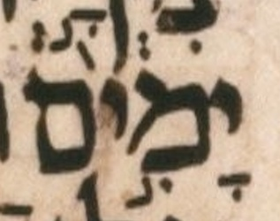
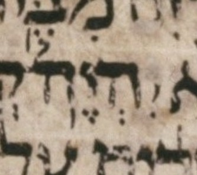

Notes relegated here from a main page’s doc column — opted in case-by-case by an editor, never by an automatic length threshold (see doc/clc-design.md §7.3).
שֵׁ֤שֶׁת יָמִים תּֽ͏ַעֲבֹ֔ד וְעָשִׂ֖יתָ כָּל־
Inline note (repeated from main page): The taḥton strand calls for a pashta on יָמִים here, but the LC has only the elyon strand’s munaḥ, and it is beyond the limits of CLC’s charity to supply the missing pashta.

Credit: Sefaria.org.
Further discussion: See the UXLC note on this word. The lack of this pashta is noted in BHL Appendix A.
This pashta is also not among the accents the grammar checker has to supply to WLC when detangling the two strands: unlike a genuine omission, it is already present in WLC — erroneously, presumably carried over from BHS, though this has not yet been verified.
לֹ֣א יִהְיֶה־
Inline note (repeated from main page): A meteg might be expected in the elyon strand here on יִהְיֶה־

Credit: Sefaria.org.
Further discussion: Regarding the meteg that might be expected on יִהְיֶה־
Aside: the mark transcribed as merkha is this note’s main subject, but it should be noted that the word’s initial yod is a charitable transcription, since most of the top of the yod seems to have flaked off. This yod is transcribed as present based on expectation combined with the tail that did not flake off, plus the faint remnants that seem to have remained even after flaking.